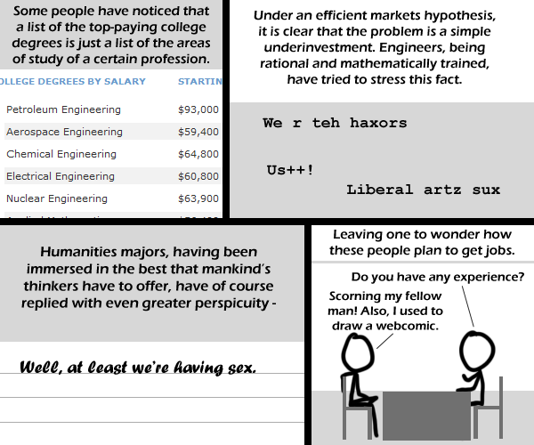

Comic JK 478
When I Feel Like It
⇤
<
?
>
⇥

⇤
<
?
>
⇥
Forum
.
RSS
.
Digg
.
Facebook
.
Reddit
.
Twitter
.
Stumbleupon
Enter your thoughts on number 478 here. Please, no spamming, trolling, or phreaking. Clearly these engineers who aren't having sex haven't met your mother. Title-text biblical reference ftw! (This title-text has been changed to protect the guilty.) >_< > Implying that having lots of cash is not an efficient method of acquiring sex. >> In and of itself, no, but it is a method of acquiring leisure time which can be devoted to such pursuits, or others, as desired. >>> But aren't the lower payed ones in this case stating the sex (the humanities ones)? >> implying that this is /b/. >>> Sorry guys, but woman actually like successful men. Liberal arts majors might have more sex during college, but then they're losers once done, and it's the engineers who end up having most of the sex. You missed Mining Engineering. It's right up there next to Petroleum Engineering in the $8x 000/yr range...oh wait...it's not an ordered list. Not organized by either field nor pay. *confusion* >That's how you know the guy in the last panel made it. >>It's the order of the original report, which was by mid-career pay 'Job Hunting by Major'? Dammit, I thought an ex-army Major was going to show how to hunt down the most dangerous prey of all - jobs! >a - Monty Python) With a banana? >b - Personal Expression of Opinion) WANT COMIC!! Do what I did, marry an English major (score!) >I've never fancied an English Major... though there was once a cute Bajoran Major... ( though to be honest, I much preferred the science officer... )